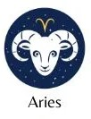
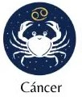

“Eu não tenho medo de mudanças porque elas sempre trazer coisas novas. Assustador mesmo é nunca mudar.” 11. “Parece que a minha mente não para, sempre estou imaginando, criando ou montando algo novo e isso me deixa feliz.”
“Ainda nas primeiras horas da manhã, a Lua entrará no signo de Touro e o clima tenso vai se desfazendo pouco a pouco. Procure levar o dia com tranquilidade, mas não deixe que a preguiça domina, foque no essencial para não atrasar as tarefas.”
“No dia de hoje você poderá lidar com alguns conflitos de interesse, isso ocorre em razão dos aspectos desafiadores entre Lua, Sol e Plutão, envolvendo sua casa de alma e profundidade e também a casa social.”
“E o recado que ele vem trazendo é que não dá mais para continuar fazendo as coisas do mesmo modo e nem mesmo continuar mantendo os mesmos valores pessoais que podem estar construído em bases familiares muito fortes.”